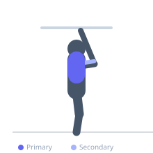

Exercise guide / Pull-Up
Pull-Up
The pull-up is a vertical pulling bodyweight exercise performed on a bar using a pronated (overhand) grip. It is one of the most effective exercises for developing latissimus dorsi width and upper back strength. The overhand grip emphasizes the lats and reduces biceps involvement compared to the chin-up.
Primary muscles
latissimus dorsi
Secondary muscles
teres major
rhomboid major
biceps brachii long head
brachialis
Stabilizers
supraspinatus
transverse abdominis
trapezius lower
Equipment
Pull-Up Bar (Doorframe)
Optional
Dip Belt


Starting position
- Hang from a pull-up bar with a pronated grip slightly wider than shoulder width. Arms fully extended, body in a hollow position with core lightly engaged. Feet may be crossed behind.
Setup
- Choose a bar that can be reached safely. Begin from a full dead hang with shoulders packed and not shrugged.
Steps
- Depress and retract the shoulder blades slightly to initiate the pull.
- Drive the elbows down and back, pulling the chest toward the bar.
- Continue until your chin clears the bar or your chest touches it.
- Lower with full control back to the dead hang position.
Coaching cues
- Pull your elbows into your back pockets
- Imagine bending the bar in half as you pull
Breathing
- Exhale on the pull up, inhale on the controlled descent.
Range of motion
- Full dead hang at the bottom, chin above bar or chest to bar at the top.
Tempo
- 2-0-2-1
Common mistakes
- Kipping or using momentum instead of controlled muscle contraction
- Only achieving partial range of motion — not fully extending at the bottom
- Shrugging the shoulders rather than depressing them before pulling
Safety
- Fully extend the elbows at the bottom of each rep to maintain shoulder health
- Warm up the shoulder rotator cuff before pull-up sets
Training
- strength: 3–6 reps
- hypertrophy: 6–12 reps
- endurance: 12–20 reps
- strength: 4–6 sets
- hypertrophy: 3–5 sets
- endurance: 3–5 sets
- Rest: {'strength': 180, 'hypertrophy': 90, 'endurance': 60}